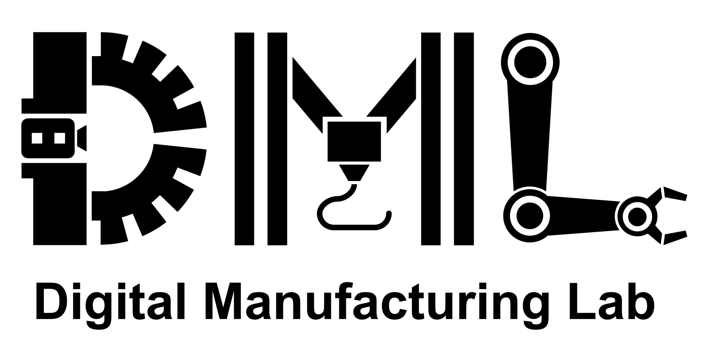
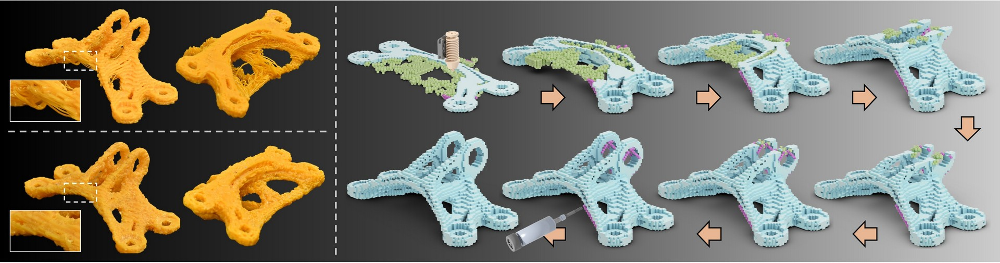
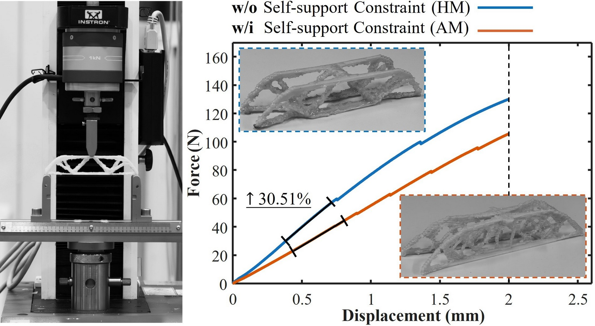
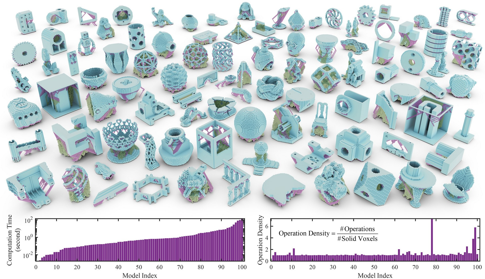

SIGGRAPH ASIA 2025
(ACM Transaction on Graphics)
Can Any Model Be Fabricated? Inverse Operation Based Planning for Hybrid Additive–Subtractive Manufacturing
Yongxue Chen*, Tao Liu*, Yuming Huang, Weiming Wang, Tianyu Zhang, Kun Qian, ZiKang Shi, and Charlie C.L. Wang†
*Joint first authors
†Corresponding author

This paper presents a method for computing interleaved additive and subtractive manufacturing operations to fabricate models of arbitrary shapes. We solve the manufacturing planning problem by searching a sequence of inverse operations that progressively transform a target model into a null shape. Each inverse operation corresponds to either an additive or a subtractive step, ensuring both manufacturability and structural stability of intermediate shapes throughout the process. We theoretically prove that any model can be fabricated exactly using a sequence generated by our approach. To demonstrate the effectiveness of this method, we adopt a voxel-based implementation and develop a scalable algorithm that works on models represented by a large number of voxels. Our approach has been tested across a range of digital models and further validated through physical fabrication on a hybrid manufacturing system with automatic tool switching.

Three-point bending tests (a) taken on the physical specimens of MBB beams determined by TO with (fabricated by AM with weight: 8.2g) vs. without self-support constraints (made by our HM with weight: 8.1g). (b) The force–displacement curves show 30.51% larger stiffness on the MBB beam made by our HM method. Note that the mechanical tests are limited to a displacement range of 0–2mm, as this range better matches the loading conditions used in the topology optimization.

Results of our method on 100 models randomly selected from the Thingi10K dataset. Support voxels added during the nullification step are shown in green, while those added during the pre-processing step are shown in purple. Computational time and operation density across all 100 models are also reported, where operation density denotes the ratio of total operations to the number of solid voxels
Contact information:
Yongxue Chen (yongxue.chen@postgrad.manchester.ac.uk)
Charlie C.L. Wang (charlie.wang@manchester.ac.uk)